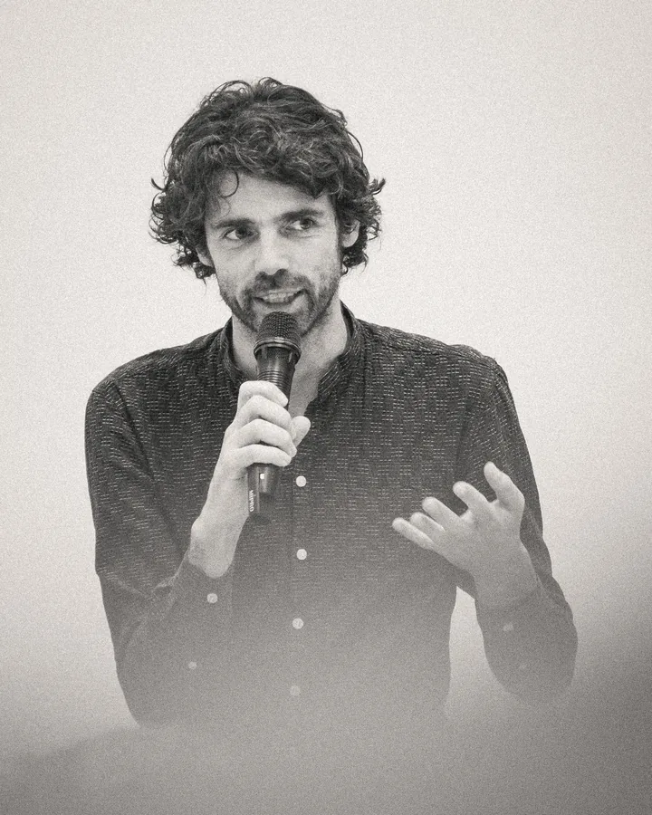
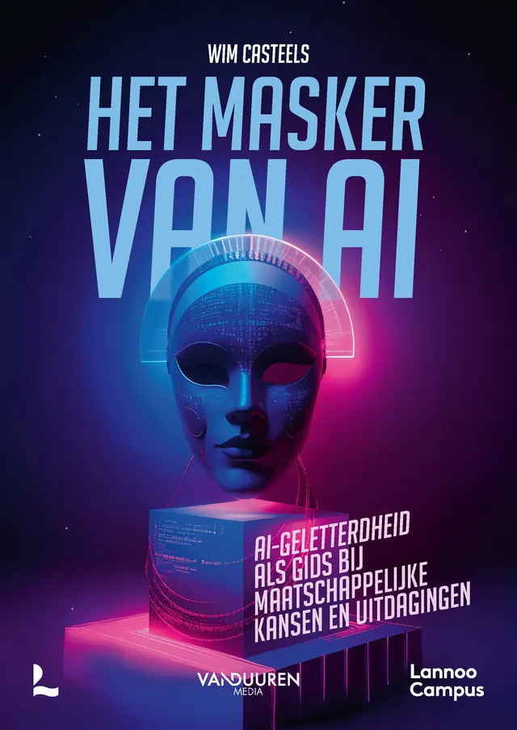

Wim Casteels · Docent, onderzoeker, auteur en spreker
Ik maak AI begrijpelijk: kritisch, wetenschappelijk en zonder hype.
Lezingen en workshops over AI voor organisaties, scholen en events. Telkens op maat van je publiek en van wat er vandaag in AI gebeurt.

Lezing en workshop
Twee formats, telkens afgestemd op je publiek en op de actualiteit.

Het masker van AI
AI komt naar ons toe verpakt in beloftes, marketing en krantenkoppen. Deze lezing haalt dat masker weg en toont wat er werkelijk speelt, en wat het betekent voor jouw publiek.
Bekijk de lezingDe vier V's
- Verdelen
- Verwoorden
- Verifiëren
- Verantwoorden
AI-vaardigheid
Geen trucjes om te prompten, wel een manier van denken. Rond de vier V's ga je aan de slag met cases uit je eigen praktijk.
Bekijk de workshopEerder te gast bij
- VNOJ Docentendag
- ICT Praktijkdag
- Dag van de Wetenschap
- KU Leuven Tech Tapas
- Greentech Forum Brussels
- TECHNIGHT Antwerp Expo
- Howest
- AP Hogeschool
- Vormings2daagse Bataljon
- Saamo
- TINC FEST
- Indispensable
Het masker van AI
Een kritische verkenning van artificiële intelligentie in 12 thematische hoofdstukken. Van ecologie tot arbeidsmarkt en van privacy tot rechtvaardigheid: dit boek ontmaskert de beloftes en valkuilen van AI.
Nieuws
Over Wim
Als fysicus en data scientist leerde Wim complexe systemen te ontrafelen. Vandaag is hij docent en onderzoeker IT & AI aan de AP Hogeschool, en vertaalt hij AI naar een breed publiek: open voor innovatie, maar altijd met een kritische blik op de maatschappelijke impact.
Meer over WimEen lezing of workshop voor je organisatie?
Vertel wie je publiek is en wat je wilt bereiken. Dan maken we samen een sessie op maat.
Boek een lezing